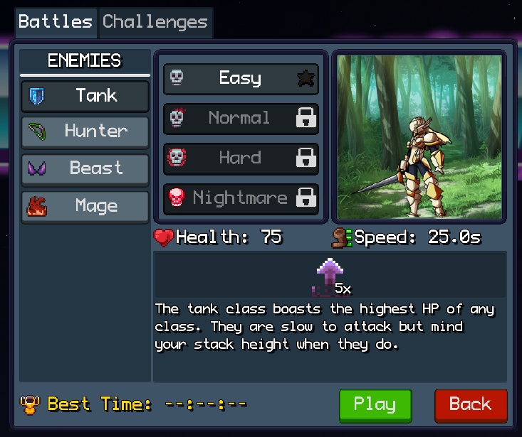
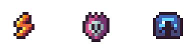
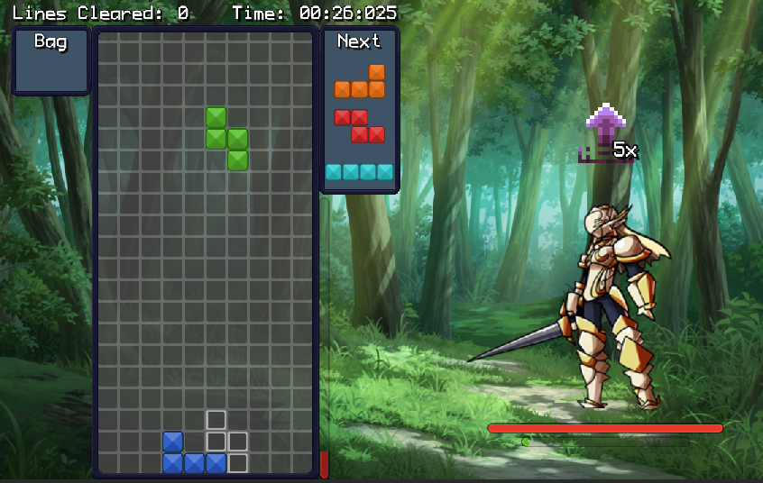

About the Game
Tetrakill is a twist on Tetris that pits the player against a variety of computer controlled enemies. I came up with the idea from this game when looking at player versus player Tetris games and wondered what new mechanics could be introduced to that would add different strategies. I decided that a single player experience where your opponent has access to a variety of abilities that a normal player wouldn't have opens up many possibilities for interesting interactions.
The plan for this game is for there to be a full campaign mode where you will battle against a series of enemies, gather upgrades and skills that the player can use in battle, player-selected difficulty modifiers to adapt the games difficulty to each players skill level, online leaderboards and more.
In the first release of the demo the game features a preview of what the battle system will look like. There is a sampling of enemies types for you to challenge, each with their own stats and abilities. I hope that you will find interesting ways to interact with the game and formulate new strategies. Note: game progress is currently being saved in the browser's local storage, so clearing your cache will reset your progress.
Thanks for trying the game, hope you enjoy and let me know your thoughts!
Tutorial
Click the "Play" button to open the gamemode selection menu. You can select from either battles or challenges. Battles are the main mode of Tetrakill where you will face off against computer opponenet. Challenges on the other hand are the traditional Tetris gameplay your familiar with along side an additional score tracker for you to compete against yourself or others.
Battle Menu

In the battle menu you can select from 4 different enemy classes to fight against at 4 different difficulty levels.
When an enemy is selected you can see a preview of their stats and the abilities that they have. In the screenshot, the enemy has 75 health, 25 speed and 1 skill shown in the skill bar. Each of these elements can be hovered to show more information.

There are 3 types of skills in Tetrakill:
- Active: Triggered right away when the enemy uses them.
- Attack: Generally skills that will add pieces to your board. They only trigger after you place a piece down and only if you DON'T clear a line with said piece. Only one attack skill can trigger at a time, any remaining ones will stay queued until you use your next piece.
- Passive: Skills that are always in effect.
In Battle

While in battle, you can see your board on the left side of the screen and the enemy on the right side.
- At the top left of your board is the bag which allows you to store a piece for later use or swap your current piece with the piece in the bag.
- The top right shows a preview of the upcoming pieces while the bottom right shows a danger bar to signify incoming Attack skills
- Above the enemy is the symbol of the skill that was just used against you.
- Below the enemy is the health bar. Bring this down to 0 to win.
- Below the health bar is the speed bar. This will continuously fill up and when full, the enemy will use a skill from its skill pool.
Damage Calculation
- Single Line: 1 damage
- Double Line: 3 damage
- Triple Line: 5 damage
- Tetra: 10 damage
- Spin Move: Multiplies damage by 1.5
- Combos: +1 damage per consecutive lines cleared after 2 consecutive lines
Controls
- Move Piece: The piece can be moved left, right and down using the arrow keys.
- Rotate: To rotate the piece, use the Z key for counter-clockwise rotation and the X key for clockwise rotation.
- Hard Drop: Drop the piece instantly by pressing the spacebar.
- Bag: To bag your current piece or swap it with the piece in the bag, press the C key.
- Pause: You can pause the game using the Escape key.
- Fast Reset: You can quickly reset the game using the R key.
All controls and game sensitivity can be edited in the settings menu.
Version History
-
v0.1.0 - March 8th, 2026
Initial release of the Tetrakill demo, featuring a preview of the core "battle" mode.
- Battle against 4 unique enemy classes at 4 difficulty levels. That's a total of 16 enemy variations with unique animations and behaviors.
- Enemies will utilize skills from a pool of 11 different abilities to use against you
- Practice your skills or chase highscores in 6 different challenge modes
- Customize your games look with 16 block skins, 5 ghost skins and 5 hard drop trail skins
- 14 total achievements to obtain in various gamemodes
- Customizable audio levels, keybindings, and sensitivity settings